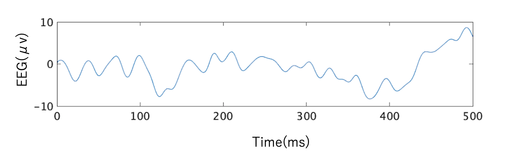

作品一覧
作品①しくじった経験を投稿するwebサイト
その際の発表原稿作品②

早慶戦の際、入り口に飾られた生け花の作品。チームで生けた。
作品③私の脳波
これは私の静止時の脳波である。何もしていない時も、脳には揺れがある。脳が作り出した作品である。
しくじった経験を投稿するwebサイト
その際の発表原稿
早慶戦の際、入り口に飾られた生け花の作品。チームで生けた。
これは私の静止時の脳波である。何もしていない時も、脳には揺れがある。脳が作り出した作品である。